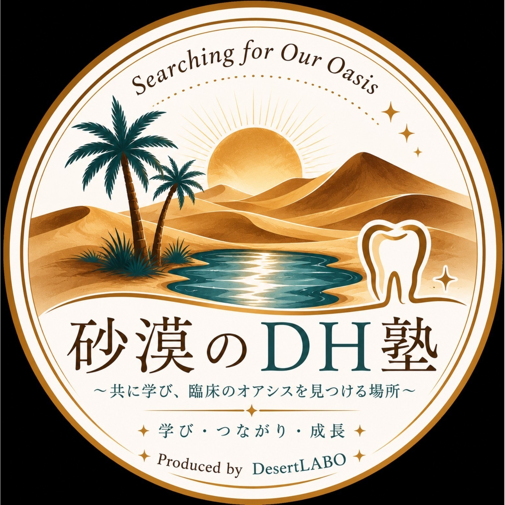

Dental Education & Management Lab
歯科衛生士の学びが、未来のオアシスをつくる。
砂漠の中でオアシスを探し続けるように、学び・つながり・成長する場をつくる。DesertLABOは、歯科医療の未来をより良くするための教育・実践・研究プロジェクトです。
CONCEPT
学びと仕組みで、
歯科の未来をデザインする。
⬡
研究・改善・仕組み
学びを一時的なものにせず、再現できる仕組みへ。
🌴
砂漠とオアシス
迷いの中でも学び続けられる場所をつくる。
✦
希望の光
小さな気づきが、未来への選択肢になる。
D
Dの意味
Dental・Dream・Direction・Designの想いを込めて。
⚗
LABO
実践・探求・検証を通して、より良い医療と教育へ。

PROJECTS
砂漠のDH塾
認定歯科衛生士と学ぶスタディグループ。症例を通して考え、学び合い、臨床のオアシスを見つける場所を目指します。
Instagram：@sabaku_dh_juku
Produced by DesertLABO
ACTIVITY / HISTORY
2026.6
砂漠のDH塾 活動開始
歯科衛生士同士が学び合う場づくりを開始。
2026.7
DesertLABO ホームページ公開
活動と想いを届けるための公式サイトを公開。
ABOUT
DesertLABOとは
DesertLABOは、歯科医療の未来をより良くするために、教育・学び・発信を行うプロジェクトです。
CONTACT
DesertLABO事務局
desertlabo.office@gmail.com